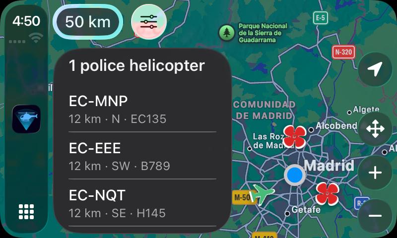
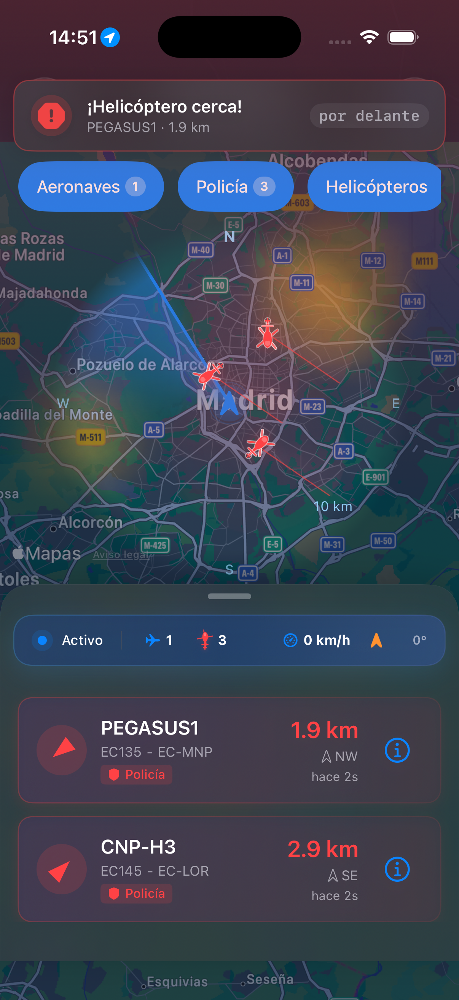

Focused alerts
Alertas claras
Choose voice and sound behavior for foreground, background, always, or never.
Configura voz y sonido para primer plano, segundo plano, siempre o nunca.

Aviation awareness for iPhone, Android and CarPlay
Know what is flying nearby. See police helicopters clearly, understand their direction, and receive alerts without watching the screen.
Información aérea para iPhone, Android y CarPlay
Descubre qué vuela cerca. Identifica helicópteros policiales, entiende su dirección y recibe alertas sin mirar la pantalla.
Live radar
Distance, direction, category and recency stay together. The app keeps police contacts visually separate from ordinary aircraft, including when map pins are grouped.
Radar en directo
Distancia, dirección, categoría y actualización aparecen juntas. Los contactos policiales se distinguen de las aeronaves ordinarias, incluso cuando los marcadores se agrupan.
A live map and compact list keep the nearest contacts readable.
El mapa y la lista mantienen legibles los contactos más cercanos.
Police, helicopter, aircraft and ground categories remain distinct.
Policía, helicópteros, aeronaves y tráfico terrestre siguen diferenciados.
Voice, sound and notifications adapt to foreground and background use.
Voz, sonido y notificaciones se adaptan al uso en primer o segundo plano.

Scan status
A quiet sky is different from a connection problem. RadarCopter keeps each outcome separate so you can tell whether the scan is still working, finished, filtered, offline, or failed.
Estado del escaneo
Un cielo sin actividad no es lo mismo que un problema de conexión. RadarCopter diferencia cada resultado para saber si el escaneo sigue activo, ha terminado, está filtrado, no tiene conexión o ha fallado.
Built around attention
RadarCopter gives you control over range, display and alert behavior instead of forcing one noisy mode on every situation.
Diseñada para cuidar tu atención
RadarCopter te permite controlar el alcance, la visualización y las alertas sin imponer un único modo ruidoso para cada situación.
Choose voice and sound behavior for foreground, background, always, or never.
Configura voz y sonido para primer plano, segundo plano, siempre o nunca.
Recent sightings add useful geographic context without obscuring live contacts.
Los avistamientos recientes añaden contexto geográfico sin ocultar contactos en directo.
Aircraft, helicopters, ground traffic and police remain identifiable on iPhone and CarPlay.
Aeronaves, helicópteros, tráfico terrestre y policía se distinguen en iPhone y CarPlay.
CarPlay
The Pro CarPlay view follows the car, keeps police contacts distinct, and puts radius, filters and recentering within immediate reach.
CarPlay
La vista CarPlay de Pro sigue al coche, diferencia los contactos policiales y mantiene a mano el radio, los filtros y el centrado.
26
European countries covered
países europeos con cobertura
From Spain and Western Europe to the Nordics, Central Europe, the Baltics, Serbia, Romania and Turkey. Availability still depends on aircraft transponders and third-party aviation sources.
Desde España y Europa occidental hasta los países nórdicos, Europa central, los Bálticos, Serbia, Rumanía y Turquía. La disponibilidad depende de los transpondedores y de fuentes de aviación externas.
Android
Install it directly from Google Play. The Android app includes the live nearby-aircraft radar, categories, radius controls, and alerts.
Instálala directamente desde Google Play. La app para Android incluye el radar de aeronaves cercanas, categorías, control de radio y alertas.
Available now on Google Play.
Disponible ahora en Google Play.
Privacy by design
Privacidad desde el diseño
RadarCopter processes location in real time to find relevant nearby aircraft. It is not permanently stored, and optional rewarded ads never appear unless you choose them.
RadarCopter procesa la ubicación en tiempo real para encontrar aeronaves cercanas relevantes. No se almacena permanentemente y los anuncios con recompensa nunca aparecen si no los eliges.
Questions
Preguntas
Quick answers about scan results, coverage, alerts, CarPlay, Android, and privacy.
Respuestas rápidas sobre los escaneos, la cobertura, las alertas, CarPlay, Android y la privacidad.
Most of the time, nothing is flying near you. RadarCopter separates a completed empty scan from filtered results, an offline connection, and a failed scan so you can tell which state applies.
RadarCopter covers the 26 European countries listed above, and coverage can grow as additional countries are added.
Yes. RadarCopter 1.7.0 includes a Pro CarPlay view that follows the car and direction of travel, keeps police and ordinary aircraft distinct, and provides radius, filter, and recenter controls.
Yes. With Pro and the required permissions, RadarCopter can monitor in the background and issue enabled voice, sound, or notification alerts. Timing still depends on iOS or Android background-execution rules and network availability.
Live aircraft positions come from third-party aviation providers such as Flightradar24 and, where enabled, public ADS-B data from ADSB.lol.
Your location is used in real time only and is not stored, and there are no accounts. The full details are in the Privacy Policy linked below.
Yes. The Android app is available on Google Play alongside the iPhone app on the App Store.
Use Report a Problem inside the app, or email support@radarcopter.org.
La mayoría de las veces significa que no hay nada volando cerca. RadarCopter diferencia un escaneo completado sin resultados de los resultados filtrados, la falta de conexión y un error de escaneo.
RadarCopter cubre los 26 países europeos indicados arriba y la cobertura puede crecer a medida que se añadan nuevos países.
Sí. RadarCopter 1.7.0 incluye una vista CarPlay para Pro que sigue al coche y el sentido de la marcha, diferencia las aeronaves policiales de las ordinarias y ofrece controles de radio, filtros y centrado.
Sí. Con Pro y los permisos necesarios, RadarCopter puede monitorizar en segundo plano y emitir las alertas de voz, sonido o notificación activadas. El intervalo depende de las reglas de ejecución en segundo plano de iOS o Android y de la conexión disponible.
Las posiciones en directo vienen de proveedores externos de datos de aviación como Flightradar24 y, cuando está activado, datos ADS-B públicos de ADSB.lol.
Tu ubicación se usa solo en tiempo real y no se almacena, y no hay cuentas. Todos los detalles están en la Política de Privacidad enlazada abajo.
Sí. La app de Android está disponible en Google Play junto a la app de iPhone en el App Store.
Usa Informar de un problema dentro de la app o escribe a support@radarcopter.org.
RadarCopter relies on public and third-party aviation data that can be delayed, incomplete or unavailable. It is not an emergency, navigation or law-enforcement service.
RadarCopter depende de datos públicos y de terceros que pueden llegar con retraso, ser incompletos o no estar disponibles. No es un servicio de emergencias, navegación ni policial.
Get supportObtener ayuda Read the privacy policyLeer la política de privacidad